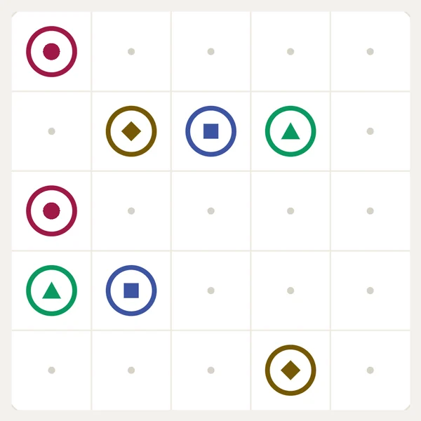
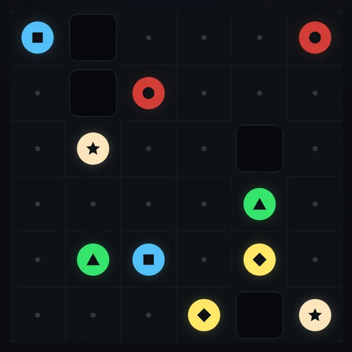
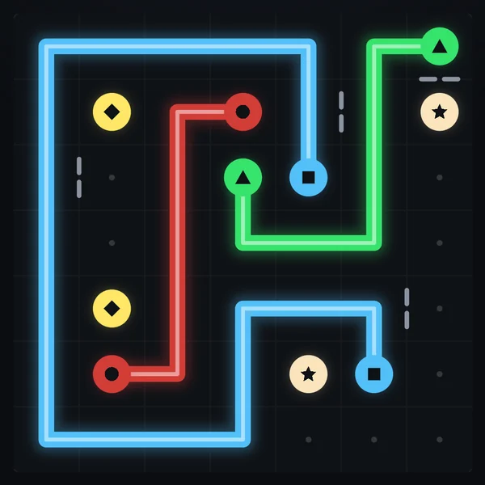
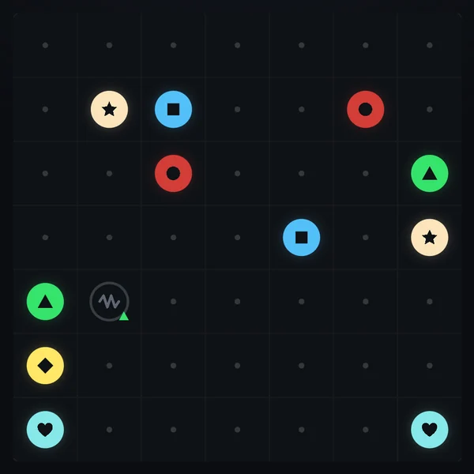
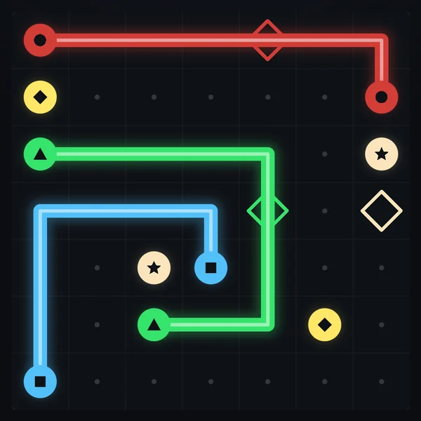
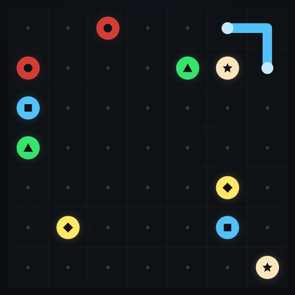
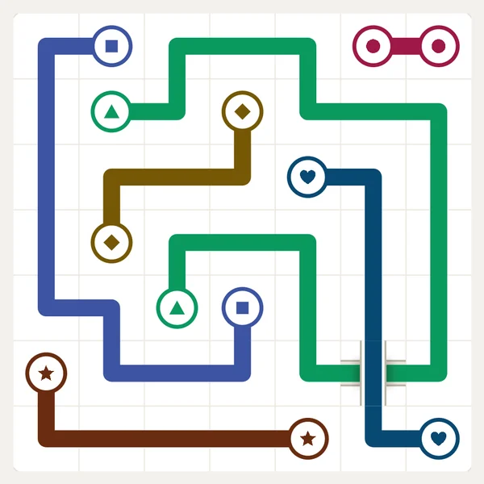
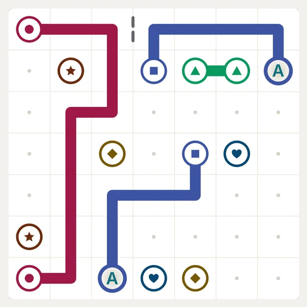
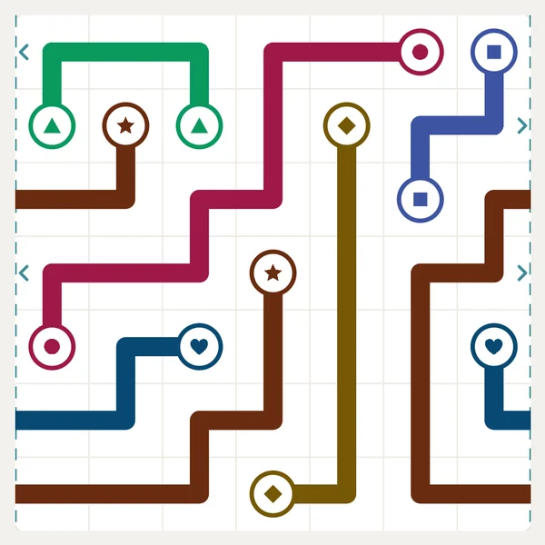

Home / How to play
How to play
One rule set, eight twists, three stars.
The rules
- Each pair of sockets has its own colour and its own symbol. Drag from one socket to its twin to lay a wire between them.
- Wires run along the grid, never diagonally. They never cross each other and never pass through another pair's socket.
- Drag through another wire to cut it: the cut part springs back. Drag from the middle of one of your wires to re-route it from there.
- The board is complete when every pair is joined and every cell is covered.
- Undo, Redo and Clear sit under the board. There are no wrong moves, no lives and no time limit in the Journey.

Obstacles
From Chapter 2 on, every chapter adds one new piece of circuitry. Each one arrives on an easy board with a one-line tip, and none of them hides anything: everything you need to solve a board is on it.

Chapter 2 · from level 51Dead chips
Dark blocks that are not part of the board. Wires go around them, and they cut boards into new shapes.

Chapter 3 · from level 101Cut traces
A broken-trace mark on the edge between two cells. No wire may cross that edge, but both cells still need filling.

Chapter 4 · from level 151Fuses
A fused socket starts dark and shows the symbol of the pair that powers it. Connect that pair and the fuse blows: the socket lights up in its own colour, ready to be wired.

Chapter 5 · from level 201Relays
A diamond pad ringed in one colour. Only that colour's wire may pass through it, and that wire must.

Chapter 6 · from level 251Soldered traces
A few cells of a wire already laid, with a joint at each end. They can't be cut or cleared, and their pair's wire has to run through them.

Chapter 7 · from level 301Bridges
An overpass that takes two wires straight through: one passes under, the other crosses on top.

Chapter 8 · from level 351Vias
Two holes with the same letter. A wire that goes into one comes out of the other, so far-apart parts of the board join up.

Chapter 8 · from level 371Wrap-around edges
On a board with dashed side edges, a wire leaving the right edge comes back in on the left, and the other way round.
Stars
Stars reward a clean solve, never a fast one. A stroke is one drag, from touching the screen to letting go.
- ★★★Every wire drawn in one stroke.
- ★★☆Finished any other way: a wire took two strokes, was cut or re-routed.
Replay any level for more stars; your best result is kept. Stars open the later chapters.
Three ways to play
Journey
The main road: 400 levels in eight chapters. Levels climb gently, every sixth one is a Challenge, and each chapter ends with a boss.
Daily
One board a day for everyone, new at 00:00 UTC, using only obstacles you have already met. The timer stays hidden unless you switch it on; your time goes to the Daily leaderboard. Past days wait in the calendar.
Blitz
Opens after Journey level 10. Solve as many tiny boards as you can in 60 seconds: 4×4, then 5×5, then 6×6. A board drawn in one stroke per wire adds two seconds. Everyone gets the same boards each day.
The chapters
Fifty levels each, getting gently harder, with a Challenge every sixth level and a boss at the end. A chapter opens when the previous boss is beaten and you have enough stars.
- Mainboard, levels 1–50: the basics
- Power Grid, levels 51–100: dead chips and rectangular boards
- Neon District, levels 101–150: cut traces
- Server Farm, levels 151–200: fuses
- Orbit, levels 201–250: relays
- Deep Core, levels 251–300: soldered traces
- Quantum, levels 301–350: bridges
- Nebula, levels 351–400: vias and wrap-around edges